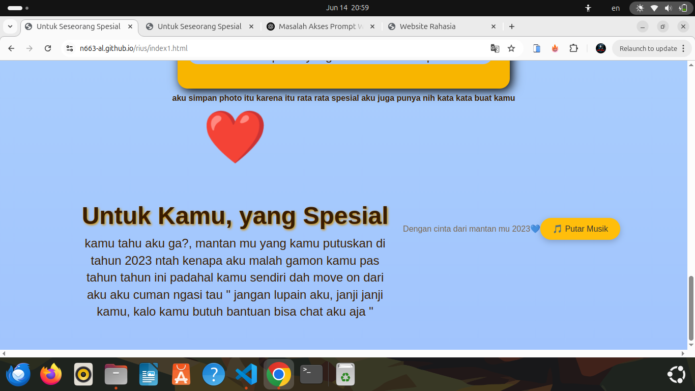

web indira - Website ucapan
Versi baru website bimbel Yuridu dengan desain simple dan tampilan mobile-friendly. Dibuat pakai HTML, CSS saja.
Lihat Proyek
web indira - Website ucapan
Versi baru website bimbel Yuridu dengan desain simple dan tampilan mobile-friendly. Dibuat pakai HTML, CSS saja.
Lihat Proyek
Yuridu v2 - Website Bimbel
Versi baru website ucapan dengan desain modern dan tampilan mobile-friendly. Dibuat pakai HTML, CSS, dan animasi JS.
Lihat Proyek

khusus - Website spesial
website khusus orang tertentu atau orang spesial yang hanya bisa masuk dengan desain modern dan tampilan mobile-friendly. Dibuat pakai HTML, CSS, dan JS.
Lihat Proyek
kalkulator - Website menghitung
website untuk menghitung perkalian penjulahan dan lain lainnya. Dibuat pakai HTML, CSS, dan JS.
Lihat Proyek
umur- Website menghitung umur mu
website khusus orang tertentu atau orang spesial yang hanya bisa masuk dengan desain modern dan tampilan mobile-friendly. Dibuat pakai HTML, CSS, dan JS.
Lihat Proyek